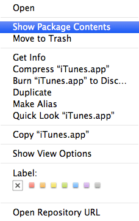

How to create simple Mac apps from shell scripts
Basically, a Mac application has a .app
extension, but it’s not really a file — it’s a package. You can view
the application’s contents by navigating to it in the Finder,
right-clicking it and then choosing “Show Package Contents”.

The internal folder structure may vary between apps, but you can be sure that every Mac app will have a Contents folder with a MacOS subfolder in it. Inside the MacOS
directory, there’s an extension-less file with the exact same name as
the app itself. This file can be anything really, but in its simplest
form it’s a shell script. As it turns out, this folder/file structure is
all it takes to create a functional app!
Enter appify
After this discovery, Thomas Aylott came up with a clever “appify” script that allows you to easily create Mac apps from shell scripts. The code looks like this:
#!/usr/bin/env bash
#
# url : https://gist.github.com/672684
# version : 2.0.2
# name : appify
# description : Create the simplest possible Mac app from a shell script.
# usage : cat my-script.sh | appify MyApp
# platform : Mac OS X
# author : Thomas Aylott <oblivious@subtlegradient.com>
APPNAME=${1:-Untitled}
if [[ -a "$APPNAME.app" ]]; then
echo "App already exists :'(" >&2
echo "$PWD/$APPNAME.app"
exit 1
fi
mkdir -p "$APPNAME.app/Contents/MacOS"
touch "$APPNAME.app/Contents/MacOS/$APPNAME"
chmod +x "$APPNAME.app/Contents/MacOS/$APPNAME"
DONE=false
until $DONE ;do
read || DONE=true
echo "$REPLY" >> "$APPNAME.app/Contents/MacOS/$APPNAME"
done
echo "$PWD/$APPNAME.app"Installing and using appify is pretty straightforward if you’re used to working with UNIX. (I’m not, so I had to figure this out.) Here’s how to install it:
- Save the script to a directory in your
PATHand name itappify(no extension). I chose to put it in/usr/local/bin, which requires root privileges. - Fire up Terminal.app and enter
sudo chmod +x /usr/local/bin/appifyto make appify executable without root privileges.
After that, you can create apps based on any shell script simply by launching Terminal.app and entering something like this:
cat your-shell-script.sh | appify YourAppNameObviously, this would create a stand-alone application named YourAppName.app that executes the your-shell-script.sh script.
After that, you can very easily add a custom icon to the app if you want to.
Adding a custom app icon
- Create an
.icnsfile or a 512×512 PNG image with the icon you want, and copy it to the clipboard (⌘ + C). (Alternatively, copy it from an existing app as described in steps 2 and 3.) - Right-click the
.appfile of which you want to change the icon and select “Get Info” (or select the file and press ⌘ + I). - Select the app icon in the top left corner by clicking it once. It will get a subtle blue outline if you did it right.
- Now hit ⌘ + V (paste) to overwrite the default icon with the new one.
Examples
Chrome/Chromium bootstrappers
I like to run Chrome/Chromium with some command-line switches or flags enabled. On Windows, you can create a shortcut and set the parameters you want in its properties; on a Mac, you’ll need to launch it from the command line every time. Well, not anymore :)
#!
/Applications/Chromium.app/Contents/MacOS/Chromium --enable-benchmarking --enable-extension-timeline-api&The & at the end is not a typo; it is there to make sure Chromium is launched in a separate thread. Without the &, Chromium would exit as soon as you quit Terminal.app.
Launch a local web server from a directory
Say you’re working on a project and you want to debug it from a web server. The following shell script will use Python to launch a local web server from a specific directory and open the index page in your default browser of choice. After appifying it, you won’t even need to open the terminal for it anymore.
#!
cd ~/Projects/Foo/
python -m SimpleHTTPServer 8080
open http://localhost:8080/More?
Needless to say, the possibilities are endless. Just to give another example, you could very easily create an app that minifies all JavaScript and CSS files in a specific folder. Got any nice ideas? Let me know by leaving a comment!
Comments
Thomas Aylott wrote on : (reply)
Nice examples.
I’d love to see what else people can come up with. What’d be slick is a droplet that lets you drag a folder into the app to serve that path. Maybe use AppleScript via
osascriptto give it a simple UI or something.Fun Times™
Mathias wrote on : (reply)
Someone just pointed me to DropScript, which pretty much does the same thing appify does, except it’s an actual OS X application.
John Lannon wrote on : (reply)
Not sure if it's actively maintained, but Platypus accomplishes is another similar utility. Like DropScript, it's an actual OS X app.
Thomas Aylott wrote on : (reply)
Platypus actually does something different. It sets the executable to some sort of binary and the includes the script as a resource. It's much slower to load than just a script file in 3 folders.
richtaur wrote on : (reply)
Sweet, I might see if I can make some games with this :D
Mathias wrote on : (reply)
If you’ve been looking for an easy, automated way to update to the latest Chromium nightly build, look no more!
I just found this script, saved it as
chromium-updater.sh, then entered the following command:Et voilà! Now, all it takes for me to update Chromium is a single click.
Of course, this app won’t be able to give any real visual feedback as to what it’s doing, but if it exits almost immediately it means you already have the latest version installed. If it takes more than a few seconds, you probably don’t and the app is downloading the latest version for ya. (That, or you have a very slow connection, or chromium.org is down.)
If you’re too lazy to build it yourself, you can just download the app here, complete with a nice icon and everything.